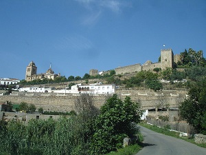
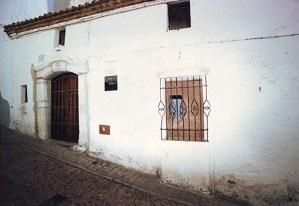

Carlos HTML© 2015 Privacy policy
Vasco Núñez de Balboa nació en 1475 en la población extremeña de Jerez de los Caballeros, que por entonces se llamaba Jerez cerca de Badajoz y pertenecía a la Orden de Santiago. El apellido Balboa proviene del castillo de Balboa, cerca de Villafranca del Bierzo, en la actual provincia de León (España). Se cree que su padre fue el hidalgo Álvaro Núñez (o Martínez) de Balboa, pero sobre quién fue su madre no se sabe casi nada. Tuvo al menos tres hermanos: Gonzalo, de profesión escribano, Juan y Álvaro. Se conoce con certeza poco de su infancia, salvo que aprendió a leer y a escribir, contrariamente a otros conquistadores españoles, así como esgrima. Durante su adolescencia sirvió como paje y escudero de Pedro Portocarrero, VIII señor de Moguer. Residió en Córdoba y tuvo casa en Sevilla. Quizás en Moguer fuese testigo de los preparativos y desarrollo del primer viaje de Colón a las Indias.
Jerez cerca de Badajoz
Casa de Núñez de Balboa
